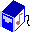

|  |
Playback control APIfor skins. |
Intro | PHP
APIs: playlist | Playback | Collection |
* void biys_play_file(int playlist=0, int ID)
* void biys_play_next(int playlist=0)
* void biys_play_previous(int playlist=0)
* void biys_play(int playlist=0)
* void biys_pause(int playlist=0)
* double biys_get_pitch(int playlist=0)
* void biys_set_pitch(int playlist=0, hodouble pitch)
* double biys_get_position(int playlist=0)
* void biys_set_position(int playlist=0, double position)
* double biys_get_volume(int playlist=0)
* void biys_set_volume(int playlist=0, double volume)
Returns the ID of the entry currently being played, or -1 if the playlist is empty.
Returns the index of the entry currently being played, or -1 if the playlist is empty.
Starts playing a particular entry in the playlist.
Skips to the next entry in the playlist.
Skips to the previous entry in the playlist.
Starts playback. Equivalent to setting the pitch to 1.0.
Pauses playback. Equivalent to setting the pitch to 0.0.
Returns the current playback pitch:
- 0 = stopped
- 1.0 = normal playing speed
- 2.0 = double playback speed
Sets the playback pitch.
Returns the playback position in the track between 0.0 and 1.0.
Sets the playback position in the track. Pass in a value between 0.0 and 1.0.
Returns the volume: 0..1.
Sets the volume: 0..1